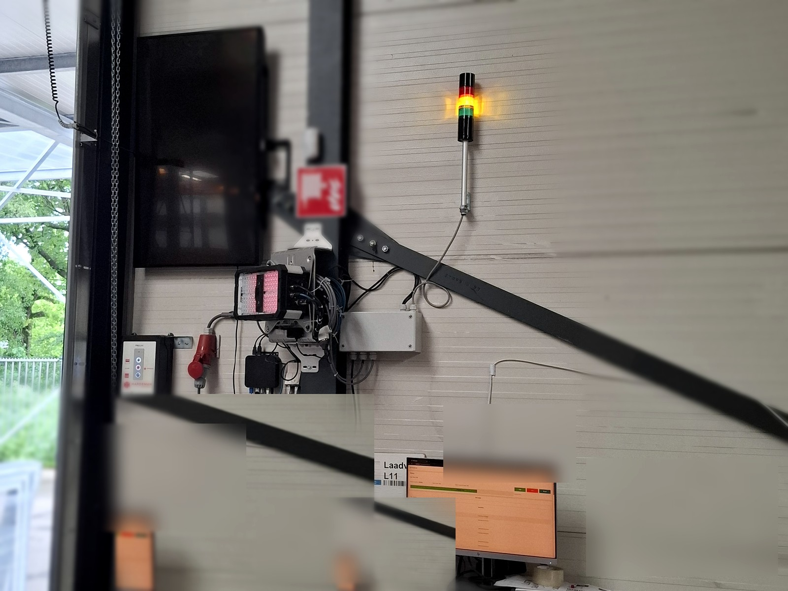

Stabilize
When a machine works, but nobody fully trusts what the software is doing, start by making the behavior visible again.
- PLC and HMI troubleshooting
- Control narrative review
- Field diagnostics and logging

Industrial automation software
The genetics of automation
PLC, HMI and data software for machines and test stands where downtime is not an abstract word.
Positioning
Dygenix works in the space between the drawing, the code and the machine: find the real problem, build the smallest reliable path, and leave a system another engineer can still understand.
About Dygenix
Dygenix Automation was started on 28 May 2025 by Francis van Uyten, a software engineer working in industrial automation.
The company is young, but the engineering behind it is not. The work comes from years spent around machines, PLC software, HMI systems, test tools, data monitoring and the practical reality of getting automation to behave on the floor.
The name Dygenix points to the deeper structure of automation: the logic, signals, data and decisions that make a machine understandable and maintainable. That is the meaning behind the line: The genetics of automation.
Services
When a machine works, but nobody fully trusts what the software is doing, start by making the behavior visible again.
New Bachmann, Codesys, PLC, HMI and Python tooling, written for operators, FAT and the next engineer who has to maintain it.
Strong support during FAT and controlled testing. SAT can be supported when the project really needs it.
Project work

Recent validation
The process started with manual work: operators had to scan and check pakbonnen by hand, then verify whether all goods were scanned correctly. That costs time and leaves room for missed checks.
Dygenix built and validated a QR Scanner solution using a Keyence code scanner and a custom application. When goods pass through the scan zone, the system automatically reads the codes and shows the result in the operator dashboard.
The system is commissioned and ready for the next step: an API connection to a business application. It is flexible enough to keep growing, fast enough to scan up to 8 codes per second on moving goods, and able to detect codes from up to 4 meters away.
Experience
Approach
Look at the process, operators, safety assumptions and failure modes before touching the code.
Make the critical behavior work first. Then harden it with tests, logging and clear state.
Document what matters, isolate the logic and keep future troubleshooting practical.
Contact
Founded in 2025 by Francis van Uyten. The genetics of automation.